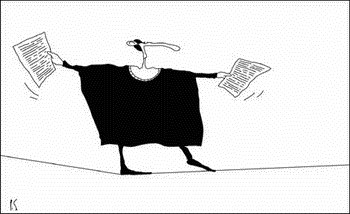
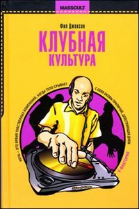

К шприцу приравняли перо (Екатерина ВАСЕНИНА, Новая газета)
В Екатеринбурге Госнаркоконтроль борется с книгами и издателями

В литературном мире снова скандал на почве идеологии и пропаганды. 28 июня на екатеринбургском складе издательской группы «У-Фактория» начались проверочно-разыскные мероприятия по выявлению пропаганды наркотиков в книгах, выпускаемых издательством. Внимание екатеринбургского отделения Госнаркоконтроля (ГНК) привлекла переводная книга преподавателя одного из английских университетов Фила Джексона «Клубная культура», вышедшая в 2005 году и входящая в серию «Масскульт» (редактор серии — Владимир Харитонов). Основанием для выемки книг стал приказ начальника Федеральной службы по обороту наркотиков. Когда верстался номер, со склада «У-Фактории» в типографии «Уральский рабочий» сотрудниками управления ФСН России по Свердловской области было изъято 895 книг (общий тираж — 10 тысяч), в офисе издательства проводился обыск, в ходе которого изъяты накладные на книгу. Сотрудники управления ФСН России по Свердловской области от комментариев отказываются.
По заявлению PR-службы «У-Фактории» «Клубная культура» прошла необходимую экспертизу: специалисты филологического факультета УрГУ утверждают, что использование слова «пропаганда» в контексте этой книги неуместно. Заключением данной экспертизы установлено следующее: «В книге Ф. Джексона «Клубная культура» не содержится пропаганды наркотических средств».
Как и в случае судебных процессов в отношении книг Баяна Ширянова и Владимира Сорокина, оперативные мероприятия по «Клубной культуре» функционируют в режиме рекламной акции. Тем не менее в Москве книга продается свободно. Корреспондент «Новой газеты» купил книгу в ближайшем книжном магазине за 115 рублей, с интересом прочитал и понял, что проблема книги в том, что она представляет собой довольно типичную научную работу в жанре cultural studies, но только на интересующую наркоконтроль тему, к тому же изложенную доступно и просто. Корреспонденту даже показалось, что оперативники, наверняка вынужденные писать похожие наблюдательские отчеты, руководствовались элементарной завистью к слогу автора книги, блистательно выполнившего их работу по анализу явления. Ведь, как пишет в «Клубной культуре» Пи Джей О’Рурк, «ни наркотики, ни даже алкоголь не являются причинами фундаментальных пороков общества. Если нас действительно интересуют корни наших проблем, то следует проверять людей не на наркотики, а на глупость, невежество».
Владимир ХАРИТОНОВ, редактор серии «Масскульт»:
— Концепция серии проста: она посвящена явлениям массовой культуры, и в ней выходили разные книжки — «Гарри Поттер» и наука», «Властелин колец» как философия», «Симпсоны» как философия». «Клубная культура» профессора Фила Джексона посвящена антропологическому и культурологическому анализу явления клубной культуры — как, зачем люди ходят в клубы, как меняется их мировоззрение в процессе клубной практики. Это традиционное для англосаксонской гуманитарной науки исследование в жанре cultural studies.
Что могло раздразнить Федеральную службу по борьбе с наркотиками, честно говоря, мне не очень понятно. Говоря о клубной культуре, особенно английской, невозможно не говорить об употреблении наркотиков. Фил Джексон ни в коем случае не оправдывает этого занятия, тем более он его не пропагандирует, просто пишет о том явлении, которое существует в жизни независимо от того, легально оно или нелегально.
Федеральная служба по борьбе с наркотиками делает стойку всякий раз, когда видит книжку, в которой написано про наркотики. Пропаганда наркотиков — другое дело. Тогда должно быть написано, что героин — это хорошо, приятно и полезно для здоровья. Ничего такого в книжке, конечно, не написано, потому что это неправда.
Илья КОРМИЛЬЦЕВ, главный редактор издательства «Ультра-Культура»
— Ни судебного, ни экспертного решения по «Клубной культуре» не было. В бумаге екатеринбургского Госнаркоконтроля (ГНК), насколько я знаю, сказано: «Изъять данные книги в рамках следственно-оперативных мероприятий с целью их проверки на наличие наркотиков». Они так воспринимают книги, это вполне фрейдистская опечатка. Текст как таковой, по их мнению, является наркотиком, оружием, заразой. Концепция «У-Фактории» и «Ультра-Культуры» проста (издательства имеют общих учредителей. — Е.В.): мы рассказываем о том, о чем не хочет рассказывать никто другой. К сожалению, в России область эта весьма широка. Мы работаем для того, чтобы эта область не становилась все больше. Принципиально мы пытаемся отстоять как разрешенные острые темы дискуссий, которые касаются политики, культуры, социологии, эстетики. У нас нет ярко выраженной политической позиции, мы не выражаем интересы какой-либо партии или группы лиц. Мы печатали крайне правых, крайне левых, религиозных и антирелигиозных деятелей. Главным для нас в них было то, что они были интересны и выпадали за пределы того, что воспринимается как общедозволенное. И здесь наша политическая, эстетическая, идеологическая линии находятся в вопиющем противоречии с представлением о реальности, которое доминирует у нашего госаппарата.
История эта имеет, очевидно, екатеринбургское происхождение, в Москве книгу не изымали. В Москве война идет совершенно с другим списком книг по статье о порнографии, и ведет его не ГНК, а прокуратура ЦАО Москвы. В минувшую среду был очередной допрос. Но по этому делу из шести книг из списка обвинения решено оставить одну, русского автора Юрия Баркова «Запретный дневник». Жизнь нанесла им контрудар: книги Мелвина Берджесса из этого списка представляли на фестивале «Книга-образ» Людмила Путина и Шери Блэр. «У-Фактория» будет подавать иск в соответствии с российским законодательством, а по московскому делу к «Ультра-Культуре» до сих пор нет обвинения. Не могут определить статью. Вроде бы намерены переквалифицировать из порнографии в разжигание религиозной розни. Поскольку по сюжету человек влюбился в икону Богоматери, это возможно. Дела о порнографии проваливались (дела Ширянова, Сорокина): нет дефиниций, нет определения порнографии. Обвинение в разжигании религиозной розни более политизированное и модное.
Артемий ТРОИЦКИЙ, музыкальный критик
— Изъятие книги из продажи — акт абсолютного недоверия к читателю, акт жлобства и насилия по отношению к нему. Каждый мало-мальски грамотный человек знает, что он для себя может извлечь из книги и какие выводы из прочитанного сделать.
Если изымать из продажи спорную информацию, то в этом случае из продажи надо было бы изъять 90% всей печатной продукции. Я уже не говорю об экстремальных вариантах типа «Философии в будуаре» маркиза де Сада и «Манифеста Коммунистической партии» Карла Маркса. В принципе в любой книге гипсовые стражи морали могут увидеть что-то, что, по их мнению, может читателя возбудить, развратить и с пути истинного свернуть. И искоренение этого «что-то» — ущербный, тупиковый путь. Эта акция анекдотична. Позор свердловским чиновникам.
Вдобавок ко всему эта идиотская практика абсолютно антиконституционна. В Конституции написано, что на самом деле запрещено: пропаганда расизма, нацизма, свержение существующего государственного строя насильственным способом. Хотя, по нашей Конституции, и книгу Войнич «Овод» можно классифицировать как произведение, призывающее к свержению существующего строя…
«Данный процесс непрост и небезопасен»
Фрагмент книги Ф. Джексона «Клубная культура»
(Печатается с разрешения издателя)

Наркотики, законные или незаконные, имеют большое значение для повышения чувственно-социальной интенсивности клаббинга, благодаря которой восприятие клубов резко отличается от восприятия других пространственно-временных миров. Клубные наркотики помогают порождению разнообразного опыта. Каждый из них обладает своей «установкой и обстановкой»*, которые могут усиливаться, а иногда притупляться в зависимости от обстановки и публики в конкретном клубе. Экстази способствовал трансформации представления людей о хорошей вечеринке и оживил ночную жизнь Великобритании. Он облегчил переход к новому социальному и чувственному восприятию ночи, имевшему мало общего с предшествовавшей ему пьяной гулянкой. Этот переход помог очертить модель клуба, каким его хотят видеть тусовщики, местом с более насыщенной атмосферой. Эта модель видоизменялась вместе с модой и наркотиками. Экстази — лишь один из многих препаратов, играющих сегодня важную роль для вечеринки.
Характер погружения в дурман также со временем меняется. Он приобретает свою схему, а знания людей о предпочитаемых наркотиках с опытом углубляются. Мои информанты после многих лет употребления наркотиков так и не «съехали с катушек», а приобрели химическую грамотность. Данный процесс непрост и небезопасен, но этот риск кажется моим информантам оправданным, потому что проведенное в волнах кайфа время добавило их жизням нечто существенное. * «Установка и обстановка» (set and setting) — термин, придуманный Тимоти Лири для обозначения предшествующих и сопутствующих наркотическому «трипу» условий, влияющих на его течение.